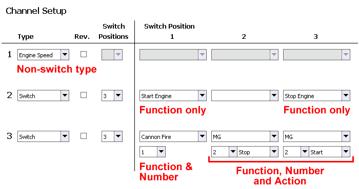

Functions
This page describes all the possible functions that can be assigned to radio channels. As discussed in the Radio section, there are two channel
types. Channels of type "Switch" will have functions assigned to the various switch positions of that channel. In the special case of non-switch channel types, the type itself
represents the function of that channel (engine speed, volume, etc.)
Note that some switch functions require you to specify additional details such as a number or action. In the example below, Channel 1 is assigned the Engine Speed type, which describes
the functio of that channel. The Channel 2 switch will be used to start and stop the engine, and those functions stand alone.
However the Cannon Fire function on Channel 3 requires a number to be specified to indicate which cannon is to be fired, in the example we are firing Cannon #1.
Similarly we can see that we are also using Channel 3 to fire the MG and we have specified the #2 machine gun. The MG function also requires an action for each position, in the example
we have selected Stop and Start.

Different types of functions
Function List - Special cases
- Engine Speed: Engine Speed is optional but if used will always be assigned to channel 1, which you should connect to the throttle channel of your RC receiver.
The sound card will monitor this channel and play the various engine sounds appropriate to the speed of your model (see the Sound Files Reference for
more details on these sounds). Further settings related to the throttle channel can be made on the Settings tab.
- Volume: The Volume channel is optional but if used will always be assigned to channel 5. This channel type allows you to control the master volume of the sound card
from your transmitter, ideally from a potentiometer/knob.
Function List - "Switch" Channels
- Start Engine: Start playing the engine sounds beginning with the engine startup sound, followed by the engine idle sound and controlled from there by the position of your throttle channel.
- Stop Engine: Play the engine shutdown sound.
- Toggle Engine: Start the engine if it is stopped, or stop it if it is already started.
- Cannon Fire: Play one of up to three cannon fire sounds, determined by the number chosen. The cannon fire function does more than just play a sound:
- Cannon #1: The cannonf.wav file will be played, the Light 1 output will flash, and the servo recoil effect will be performed.
- Cannon #2: The cannonf2.wav file will be played, the Light 2 output will flash, but no servo recoil will occur.
- Cannon #3: The cannonf3.wav file will be played, the Light 3 output will flash, but no servo recoil will occur.
The flash time of each light output, and further settings related to the recoil servo can be found on the Settings tab.
- Machine Gun: The machine gun function requires both a number to be specified (1, 2 or 3) and an action to be performed which can be Start, Stop, or Toggle. Unlike the cannon sound for example, which plays once and stops,
when you Play the machine gun sound it will continue to repeat until you specifically tell it to Stop. Alternatively you can use the Toggle action to start/stop it with only a single switch position.
Whenever the machine gun sound is playing the associated Light output (1, 2 or 3) will also blink at the rate specified on the Settings tab.
- User Sound: This function controls the user sounds (userX.wav where X is a number from 1 to 22). The number selects the sound (1 through 22) and the action can be Play, Stop, or Repeat. When Played the sound
will continue to play until it completes or until you specifically Stop it. If you Repeat the sound it will continue to play over and over until you specifically Stop it.
- Light: Controls the selected Light output (1, 2 or 3). The possible actions are:
- On: Will turn Light output (1, 2 or 3) on, and if present, will also play the lightX.wav sound file (where X is 1, 2 or 3).
- Off: Will turn Light output (1, 2 or 3) off, and if present, will also play the lightX.wav sound file (where X is 1, 2 or 3).
- Toggle: Will alternate the Light output (1, 2 or 3) state between On and Off.
- Start Blink: Will start blinking Light output (1, 2 or 3) at the rate specified on the Settings tab. The light will continue to blink indefinitely until you call the Off function. No sound is played.
- Toggle Blink: Will toggle the Light output (1, 2 or 3) between the Blinking and Off states. No sound is played.
- Flash: Will flash (turn on momentarily) the Light output (1, 2 or 3) for the length of time specified on the Settings tab. No sound is played. If you want a sound to play
during Flash, use the Cannon Fire function instead.